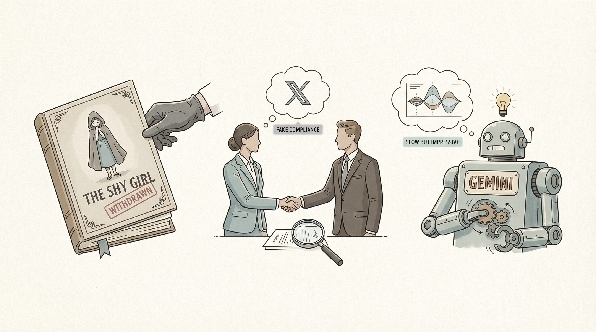

Hachette Book Group因AI生成文本担忧，决定不出版《Shy Girl》小说。
两克伴AIGC日报
2026-03-22 星期日

本期关注：小模型通过结构化提示与推理技巧逼近大模型效果，AI应用引发内容合规与伦理争议，开源工具ClawMem推动代理持久记忆发展，行业在技术突破与风险管控中探索平衡。
📰 行业动态
匿名指控合规初创公司Delve误导客户，声称其符合隐私和安全法规。
Gemini在Pixel 10 Pro和Galaxy S26 Ultra上测试新任务自动化功能，初显成效。
OpenAI的Sora文本到视频生成AI模型引发担忧，被指有优生学倾向。
🔥 今日焦点
在多跳问答任务中，研究者通过Graph RAG（KET-RAG）对Llama 3.1 8B模型进行了实验，发现检索问题基本得到解决，答案在上下文中出现的概率高达77%至91%。然而，推理成为瓶颈，73%至84%的错误答案源于模型未能连接信息点，而非信息缺失。实验发现，通过两种推理时间技巧可以缩小差距：一是将问题分解为图查询模式，形成结构化的思维链；二是通过图遍历压缩检索到的上下文，压缩率约为60%，无需额外调用LLM。结果表明，经过这些增强的Llama 3.1 8B模型在三个常用基准测试中与Llama 3.3 70B模型相当或更优，成本仅为后者的1/12。这一研究对于AI领域具有重要意义，它揭示了推理在问答任务中的关键作用，并为小型模型在推理能力上的提升提供了有效途径。
---
标题：Show HN：ClawMem – 开源AI代理持久记忆与SOTA本地GPU检索
ClawMem是一款开源的上下文引擎，旨在为AI编码代理提供跨会话的持久记忆功能。该引擎与Claude Code（钩子和MCP）以及OpenClaw（上下文引擎插件和REST API）兼容，并支持使用相同的SQLite存储库，使得CLI代理和语音/聊天代理能够在无需同步的情况下共享相同的记忆。
Show HN近日发布了一款名为Signet-eval的新工具，旨在为Claude Code提供确定性政策执行。该工具通过正则表达式和简单条件对工具调用进行评估，确保执行前的合规性。其工作原理是：首先匹配成功，即可执行，从而避免了提示注入的风险。Signet-eval的启动速度约为60毫秒，评估速度小于1毫秒，极大地提高了执行效率。
这一创新对于AI领域具有重要意义。首先，它为AI系统的安全性和稳定性提供了有力保障。通过在执行前进行政策规则评估，可以有效防止恶意操作和潜在的安全风险。其次，Signet-eval的快速响应速度有助于提高AI系统的整体性能，为用户提供更加流畅、高效的体验。此外，该工具的推出也为AI开发者提供了新的思路和工具，有助于推动AI技术的进一步发展。
📚 深度长文
本文深入探讨了Git在编码代理中的应用。文章指出，Git作为版本控制工具，对于记录代码变化、调查和回滚错误至关重要。编码代理对Git的基本和高级功能都十分熟练，这使得我们能够更加大胆地使用Git。作者强调，我们不需要死记硬背Git的使用方法，而是要关注Git的无限可能，充分利用其全部功能。
文章详细介绍了Git的基本概念，如仓库、提交和提交信息。每个Git项目都存在于一个仓库中，该仓库记录了项目文件的变化。这些变化以提交的形式存在，每个提交都包含一系列文件更改和一个描述这些更改的提交信息。
本文探讨了基于Hacker News用户评论进行用户画像的方法。作者通过使用Algolia Hacker News API获取用户过去1000条评论，并利用这些数据构建用户画像。文章首先介绍了如何通过API获取用户评论，并强调了API的开放性。接着，作者分享了如何利用这些评论来分析用户的兴趣、观点和价值观。文章的核心观点是，通过对用户评论的深入分析，可以构建出较为准确的用户画像，从而更好地了解用户行为和需求。
本文具有以下阅读价值：首先，文章揭示了基于用户评论进行用户画像的可行性和有效性；其次，作者展示了如何利用API获取用户数据，为AI从业者提供了实际操作指导；最后，文章提出了对用户画像构建的独特见解，有助于推动相关领域的研究和发展。本文深度剖析了用户画像构建的方法，为AI从业者提供了宝贵的参考。
本文由ByteByteGo撰写，深入探讨了GitHub上最受欢迎的12个AI开源项目。文章基于项目整体受欢迎程度和GitHub星标数量进行精选，旨在为AI从业者提供一份全面的项目指南。文章不仅揭示了这些项目的核心技术和应用场景，还深入分析了它们在AI领域的独特见解和贡献。通过阅读本文，读者可以了解到当前GitHub上最受欢迎的AI项目，为自身的研究和开发提供有益的参考。此外，文章还探讨了这些项目在推动AI技术发展方面的作用，为读者提供了宝贵的行业洞察。总之，本文是一篇深度长文，对于关注AI领域的专业人士来说，具有极高的阅读价值。
📄 重点论文
**核心贡献**: 提出了一种基于物理引导的采集参数扰动方法，用于评估MONAI RetinaNet肺结节检测器的敏感性，并分析了切片厚度和剂量降低对检测性能的影响。
**与AI Agent的关联**: 该研究为AI Agent在医学图像处理中的应用提供了新的思路，特别是在处理复杂场景和参数调整方面，对多智能体系统和规划推理有潜在价值。
🛠️ 产品推荐
Show HN: I Built Grid View for Switchboard – Claude Code CLI Manager是一款基于CLI的代码管理工具。该产品通过引入网格视图，优化了代码的展示和管理方式，极大地提升了用户的工作效率。它能够帮助开发者快速定位代码，简化代码查找过程，有效解决传统CLI工具在代码管理上的不便。这款工具适用于技术从业者，特别是那些需要频繁处理大量代码的开发人员。
---
Show HN: Travel Hacking Toolkit是一款基于AI的旅行积分搜索与行程规划工具。该产品通过整合多个航空里程计划，提供实时查询、现金价格、积分余额、转移伙伴比例等数据，帮助用户快速比较使用积分或现金支付的成本。其核心功能包括7项技能和6个MCP服务器，通过AI技术实现自动化操作，解决用户手动跨多个标签页进行积分查询的繁琐问题。Travel Hacking Toolkit旨在为技术从业者提供高效、便捷的旅行规划解决方案。
---
Show HN：I vibe-coded the chopsticks faux pas app for you so you don't have to，这是一款基于Hacker News的热门话题，通过AI技术将话题转化为调查问卷的应用。该产品旨在帮助用户了解并避免使用筷子时的不当行为，提供专业指导，提升用餐礼仪。通过简洁直观的界面和智能算法，用户可以轻松参与调查，获取个性化反馈，提升用餐体验。这款AI驱动的应用，以其创新性和实用性，为技术从业者提供了一款实用工具。